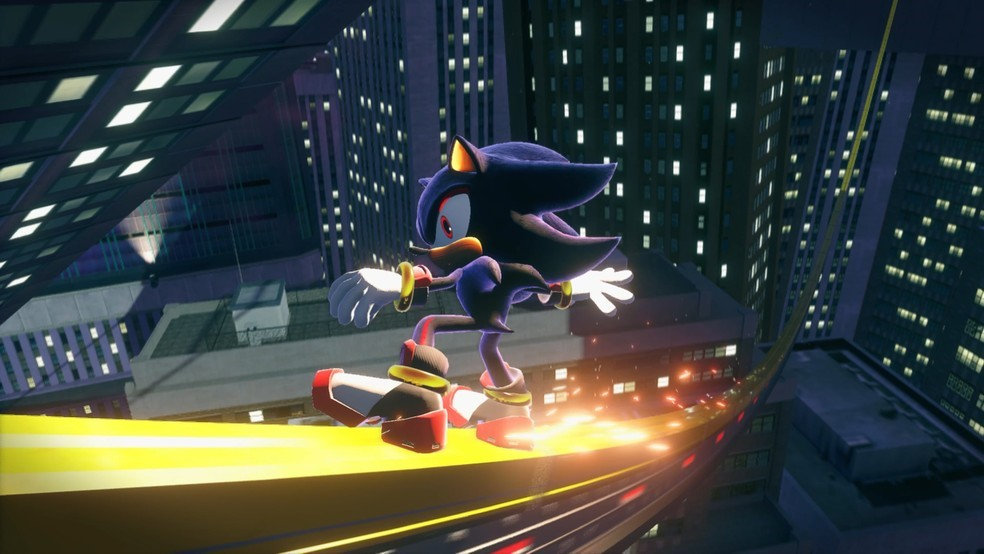

<!DOCTYPE html>
<html lang="pt">
<head>
    <meta charset="UTF-8">
    <meta name="viewport" content="width=device-width, initial-scale=1.0">
    <title>Conexão Gamer</title>

    <!-- Link para o Bootstrap -->
    <link href="https://cdn.jsdelivr.net/npm/bootstrap@5.0.2/dist/css/bootstrap.min.css" rel="stylesheet" integrity="sha384-EVSTQN3/azprG1Anm3QDgpJLIm9Nao0Yz1ztcQTwFspd3yD65VohhpuuCOmLASjC" crossorigin="anonymous">
    
    <!-- Link para o CSS do site -->
    <link rel="stylesheet" href="estilo4.css">

    <!-- Conexões para as fontes do Google Fonts -->
    <link rel="preconnect" href="https://fonts.googleapis.com">
    <link rel="preconnect" href="https://fonts.gstatic.com" crossorigin>
    <link href="https://fonts.googleapis.com/css2?family=Inter:ital,opsz,wght@0,14..32,100..900;1,14..32,100..900&family=Poppins:ital,wght@0,100;0,200;0,300;0,400;0,500;0,600;0,700;0,800;0,900;1,100;1,200;1,300;1,400;1,500;1,600;1,700;1,800;1,900&display=swap" rel="stylesheet">

    <!-- Link para o Font Awesome -->
    <link rel="stylesheet" href="https://cdnjs.cloudflare.com/ajax/libs/font-awesome/6.5.1/css/all.min.css">

    <!-- Ícone da página (Favicon) -->
    <link rel="icon" href="imgs/modelo_logomarca.png" sizes="1024x1024" type="image/x-icon">
    
    <!-- Ícone bootstrap -->
    <link rel="stylesheet" href="https://cdn.jsdelivr.net/npm/bootstrap-icons@1.11.3/font/bootstrap-icons.min.css">
  </head>


<body>
  </html>


  <header> 

    <nav class="nav-bar">     <!--  Incicio da barra -->
      <div class="logo">
        <section class="logo">
          <a href="index.html">  <!-- Link para a página inicial -->
            
          </a>
        </section>
        
      </div>

      <div class="nav-list">
        <ul>
          <!-- Alteração do link para ir até a seção "Últimas notícias" -->
            <!-- Link para a seção "Últimas notícias" na página inicial -->
          <li class="nav-item"><a href="index.html#ultimas-noticias" class="nav-link">Destaques</a></li>
          <li class="nav-item"><a href="Noticias.html" class="nav-link">Notícias</a></li>
          <li class="nav-item"><a href="Lancamentos.html" class="nav-link">Lancamentos</a></li>
          <li class="nav-item"><a href="Diversao.html" class="nav-link">Diversao</a></li>
        </ul>
      </div>

      <div class="login-button">
        <button><a href="#">Sobre</a></button>
    </div>

    <div class="mobile-menu-icon">
        <button onclick="menuShow()"></button>
    </div>
</nav>
<div class="mobile-menu">
  <ul>
<!-- Link para a seção "Últimas notícias" na página inicial -->
    <li class="nav-item"><a href="index.html" class="nav-link">Destaques</a></li>
    <li class="nav-item"><a href="Noticias.html" class="nav-link">Notícias</a></li>
    <li class="nav-item"><a href="Lancamentos.html" class="nav-link">Lancamentos</a></li>
    <li class="nav-item"><a href="Diversao.html" class="nav-link">Diversao</a></li>
  </ul>
  <div class="login-button">
    <button><a href="Sobre.html">Sobre</a></button>
  </div>
</div>
</div>
    </div>

  </header>  
  <div class="container" id="ultimas-noticias">
    <h2 class="ultimas-noticias">Sonic | Dois novos jogos estão “em plena produção”, diz Insider</h2>
<!-- Texto do anúncio -->
<p>
  Em uma nova postagem no X (antigo Twitter), o insider Ryan from Bronx afirmou que dois jogos do Sonic estão "em produção total" e serão lançados em 2025 e 2026.
  Aparentemente, um deles é um remake ou remasterização, enquanto o outro é uma continuação de Sonic Frontiers.
  Por enquanto, tudo deve ser tratado como um rumor.
  Vale lembrar que estamos perto do lançamento de SONIC 3: O Filme, próximo capítulo da franquia cinematográfica do personagem, nos cinemas.
  No Brasil, SONIC 3: O Filme chega aos cinemas em 25 de dezembro.
  No filme, veremos Sonic, Knuckles e Tails reunidos novamente, agora contra um poderoso adversário, Shadow, um vilão misterioso com poderes diferentes de tudo que já enfrentaram antes. Com suas habilidades superadas em todos os sentidos, a Equipe Sonic deve procurar uma aliança improvável na esperança de detê-lo e proteger a Terra.
  Ben Schwartz (Sonic), James Marsden (Tom), Tika Sumpter (Maddie), Jim Carrey (Dr. Robotnik), Idris Elba (Knuckles) e Colleen O'Shaughnessey (Tails) vão retornar no elenco principal.
  Keanu Reeves, Krysten Ritter, Alyla Browne, James Wolk, Sofia Pernas, Cristo Fernández e Jorma Taccone estão confirmados como recém-chegados.
  
</p>

<!-- Imagem centralizada -->


  </div>

</section> <!-- Últimas notícias fim -->


<section class="socias">    <!-- rodape começo -->
  <div class="interface">

    <article class="txt-socias">
      <h3>Fique online conosco!</h3>
    </article>

    <article class="icons-socias">
      <a href="https://www.instagram.com/conex.aogamer?igsh=MWRkeXNmM211NjB4cg==" target="_blank">
        <button><i class="bi bi-instagram"></i> <p>Instagram</p></button>
      </a>
      <a href="https://x.com/ConexaoGamerOfc?s=08" target="_blank">
        <button><i class="bi bi-twitter-x"></i> <p>Twitter X</p></button>
        <a href="Coneexao.gameroficial@gmail.com" target="_blank">
          <button>
            <i class="bi bi-envelope-at"></i>
            <p>Email</p>
          </button>
        </a>
    </article>

  </div>
</section>   <!-- rodape fim -->
  
  <body>